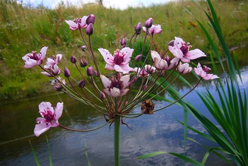

Butomaceae
Flowering Rush Family
Butomaceae is a monotypic family, containing only a single species, Butomus umbellatus (Flowering Rush). It is a rhizomatous, aquatic or emergent perennial herb native to temperate Eurasia but widely naturalized and considered invasive in North America. Distinctive features include long basal leaves, a tall scape bearing a terminal umbel of showy pink flowers with 9 stamens, and a superior ovary composed of separate carpels. Butomaceae belongs to the monocot order Alismatales.
Overview
The Butomaceae family comprises just one species, Butomus umbellatus, commonly known as Flowering Rush. This aquatic monocot grows from a stout rhizome in shallow waters of lakes, rivers, canals, and marshes. Native across temperate Europe and Asia, it has been introduced to North America, where it has become an invasive species in the Great Lakes region and other waterways, outcompeting native vegetation.
Flowering Rush is recognized by its basal tuft of long, linear, three-angled leaves and, especially, by its striking inflorescence: a simple umbel of attractive pink or whitish-pink flowers held high above the water on a tall, cylindrical stalk (scape). Each flower typically has 6 petal-like tepals, 9 stamens, and unusually for monocots, 6 or more separate carpels forming the superior ovary.
Phylogenetically, Butomaceae represents an early-diverging lineage within the Alismatales, an order known for its high proportion of aquatic and wetland plants. Its unique combination of floral features provides insights into the evolution of flowers within this ancient monocot group.
Quick Facts
- Scientific Name: Butomaceae
- Common Name: Flowering Rush Family
- Number of Genera: 1 (Butomus)
- Number of Species: 1 (Butomus umbellatus)
- Distribution: Native to temperate Eurasia; invasive in North America.
- Evolutionary Group: Monocots - Alismatales
- Habit: Rhizomatous aquatic or emergent herb.
Key Characteristics
Growth Form and Habit
Perennial, aquatic or emergent herbs growing from a thick, fleshy rhizome. Plants contain milky latex (laticifers present).
Leaves
Leaves are all basal, arising from the rhizome. They are long (up to 1m or more), linear, and typically triangular in cross-section (triquetrous) for much of their length, though submerged leaves can be flatter. Leaf bases are sheathing. Venation is parallel.
Flowers and Inflorescence
Flowers are arranged in a simple, terminal umbel (an inflorescence where multiple flower stalks arise from the same point) at the apex of a long, erect, cylindrical, leafless flowering stalk (scape). The umbel is subtended by 3 prominent bracts. Individual flowers are relatively large, showy, bisexual, and radially symmetrical (actinomorphic).
- Perianth: Consists of 6 petal-like tepals arranged in two whorls of 3 (3+3). Tepals are separate (not fused), typically pink or whitish-pink with darker veins, and persistent in fruit. The outer 3 are slightly thicker and more sepal-like in texture but remain colored.
- Stamens: Characteristically 9 stamens, typically arranged in an outer whorl of 6 and an inner whorl of 3. Filaments are flattened at the base. Anthers are basifixed and open by longitudinal slits.
- Ovary: Superior and distinctively composed of 6 (sometimes up to 9) separate carpels (or carpels fused only slightly at the very base), making it essentially apocarpous. Each carpel contains numerous ovules attached over its inner surface (laminar placentation) and tapers into a short, terminal style with a stigma running along its inner side. Nectar is secreted at the base of the carpels.
Fruits and Seeds
The fruit is an aggregate consisting of the separate, dry, dehiscent follicles (typically 6), each developing from one carpel. The follicles split open along their inner seam to release seeds. The cluster of follicles is surrounded by the persistent tepals.
Seeds are numerous, small, oblong, longitudinally ribbed, and lack (or have very little) endosperm.
Chemical Characteristics
The presence of milky latex is a notable feature. Compounds typical of Alismatales, possibly including cyanogenic glycosides, may be present.
Field Identification
Identifying Butomaceae (specifically Butomus umbellatus) involves recognizing its aquatic habitat, distinctive leaves, and especially its unique inflorescence and flower structure:
Primary Identification Features
- Habit: Aquatic or emergent herb growing from rhizomes in shallow water or wet soil.
- Leaves: Long (often >1m), basal, linear leaves that are characteristically triangular in cross-section.
- Inflorescence: A single, simple terminal umbel containing numerous flowers, held high on a tall, round scape. Umbel subtended by 3 conspicuous bracts.
- Flowers: Showy, pink or whitish-pink, with 6 separate petal-like tepals.
- Stamens: Distinctive count of 9 stamens.
- Ovary/Fruit: Superior ovary composed of 6 or more separate carpels, developing into an aggregate of follicles.
Secondary Identification Features
- Latex: Presence of milky latex if leaves or scape are broken.
- Habitat: Margins of lakes, slow rivers, canals, ditches, wetlands.
- Distribution: Native to Eurasia, invasive in parts of North America.
Seasonal Identification Tips
- Growing Season: Basal leaves are present throughout the summer growing season.
- Flowering: The tall scape with the prominent pink umbel is most visible during summer flowering, making identification easiest then.
- Fruiting: The aggregate of follicles surrounded by persistent tepals can be seen after flowering.
- Winter: Dies back to the rhizome in cold climates.
Common Confusion Points
- Alismataceae (Water Plantains): Some species grow in similar habitats and may have basal leaves and flowers in whorled or umbel-like arrangements (Alisma, Sagittaria). However, Alismataceae typically have flowers with 3 distinct green sepals and 3 white/pink petals, usually 6 or numerous stamens (not 9), and fruits that are clusters of achenes, not follicles. Leaves are often broader with distinct blades in many species.
- Sedges/Rushes/Grasses: While having linear leaves, these families have vastly different, typically small and inconspicuous wind-pollinated flowers lacking showy tepals, usually arranged in spikelets or different types of clusters, and different fruit types. They lack the large pink umbel of Butomus.
- Some Iridaceae (Iris pseudacorus - Yellow Flag): Yellow Flag Iris grows in similar habitats and has linear basal leaves, but its flowers are large, yellow, distinctly zygomorphic (iris shape) with 3 stamens and an inferior ovary producing a capsule.
The combination of the terminal umbel of pink flowers with 9 stamens and 6+ separate carpels on a tall scape arising from basal, triangular leaves is unique to Butomus umbellatus.
Field Guide Quick Reference
Look For:
- Aquatic/emergent herb from rhizome
- Long, basal, linear leaves (triangular cross-section)
- Tall scape with terminal umbel of flowers
- Umbel subtended by 3 bracts
- Flowers showy, pink/whitish, 6 separate tepals
- 9 stamens
- Ovary superior, 6+ separate carpels
- Fruit an aggregate of follicles
Key Variations:
- Monotypic family - minimal significant variation.
- Flower color intensity may vary slightly.
- Leaf length depends on water depth/conditions.
Notable Examples
This family contains only one species.

Butomus umbellatus
Flowering Rush
The sole species in the Butomaceae family. It's a rhizomatous perennial herb adapted to shallow aquatic or emergent conditions. Native to temperate Eurasia, it's recognized by its long, three-angled basal leaves and a tall scape bearing a striking terminal umbel of pink, 6-tepaled flowers with 9 stamens and multiple separate carpels. It has become an invasive weed in North American waterways.
Phylogeny and Classification
Butomaceae belongs to the Alismatales, an order of primarily aquatic and wetland monocots considered to be one of the earliest diverging ("basal") lineages within the monocotyledons. Molecular phylogenetics places Butomaceae within this order, representing a distinct, species-poor lineage.
Its exact position relative to other Alismatales families is sometimes debated, but it is often considered to be sister to the clade containing Hydrocharitaceae (frogbit family) and Alismataceae (water plantain family), or to represent its own isolated branch near the base of the core Alismatales. Its unique combination of features, such as the apocarpous gynoecium (separate carpels) with laminar placentation and the presence of 9 stamens, provides important clues about ancestral character states and floral evolution within the Alismatales and early monocots.
Position in Plant Phylogeny
- Kingdom: Plantae
- Clade: Angiosperms (Flowering plants)
- Clade: Monocots
- Order: Alismatales
- Family: Butomaceae
Evolutionary Significance
Butomaceae, despite being monotypic, is significant for:
- Basal Monocot Lineage: Its position within the early-diverging Alismatales order helps inform our understanding of early monocot evolution and the characteristics of their ancestors.
- Floral Evolution: Features like the apocarpous gynoecium (separate carpels) and laminar placentation are considered relatively ancestral ('primitive') traits among angiosperms, providing clues about floral diversification. The presence of 9 stamens is also unusual.
- Aquatic Plant Evolution: Contributes to the story of how flowering plants adapted to aquatic and wetland environments, a major theme within Alismatales.
- Invasive Species Biology: Butomus umbellatus' success as an invasive species provides ecological insights into dispersal, establishment, and impact of non-native aquatic plants.